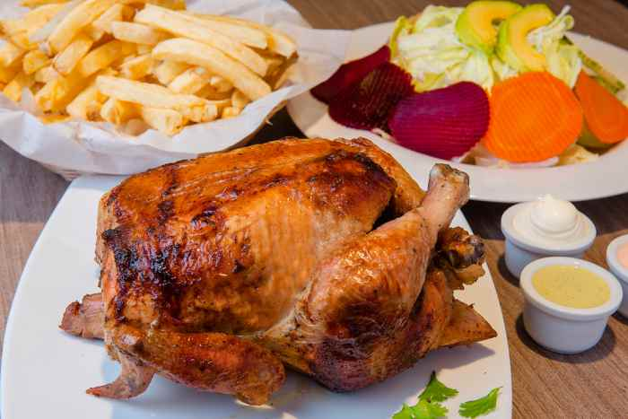

Introducción al desarrollo web
Receta del Pollo a la brasa
Fuente: Jamea Perú

Ingredientes
- 1 pollo entero sin vísceras
- 2 cucharadas soperas de sal
- 1 cucharadita de comino
- 1 cucharadita de pimienta
- 2 cucharadas de vinagre blanco
- 1 taza de cerveza negra
- 1 cucharada de orégano seco
- 2 cucharada de ajo molido
- 1 cucharada de ají panca molido
- 1 cucharada de romero seco
- 2 cucharadas de sillao
Preparación
-
En un recipiente del tamaño suficiente coloca todos los ingredientes
para realizar la marinada. Vierte el vinagre, la cerveza, el orégano, el
romero, el ají panca, el ajo molido, el comino, la pimienta, el sillao y
la sal. Mezcla todo muy bien para integrar muy bien los ingredientes.
-
Lava muy bien el pollo y retira los restos de grasa o plumas que pudiera
tener.
-
Sumerge el pollo en la marinada y báñalo con esta por dentro y por
fuera, con ayuda de tus dedos separa la piel de la carne para también
poner un poco de la mezcla al interior.
-
Déjalo macerar en el refrigerador por al menos 2 horas (ideal
sería en 12 horas, recomendable hacer este proceso la noche
anterior.
-
Al otro día o pasado el tiempo requerido colocamos el pollo en
una bandeja y llevarlo al horno a 180°C por aproximadamente 1 hora y
media. A mitad de cocción es recomendable darle vuelta y cuando falten
10 minutos volver a colocarlo en la posición inicial.
-
Verifica que esté dorado por todos lados y bien cocido. De ser así,
retira y sirve el pollo entero o trozado en presas. Se suele acompañar
con papas fritas y ensalada fresca.
Contactanos en tal dirección
Tips para preparar el pollo a la brasa
-
Adquiere un pollo congelado de los que venden en el supermercado y que
tienen la piel má;s elástica y firme, facilitando la separació de
la carne para poner la marinada.
-
Puedes emplear un molde de esos para hacer chifón para hornear tu pollo.
Estos tienen un cono en el centro donde puedes colocar el pollo en
posición vertical para que la cocción sea uniforme.
-
En caso que el horno tenga el cilindro para pinchar el pollo el tiempo
de cocción es el mismo. Aunque al final se debe verificar que este
cocido del todo.
- Tambiése puede cocinar a la brasa de carbón o leña.
-
El pollo a la brasa es una preparación de sabor intenso, por lo que
también puedes añadir al aderezo los siguientes ingredientes: huacatay,
pisco, achiote, una pizca de Ajinomoto, mostaza, etc. Todo depende de tu
gusto y la disponibilidad.